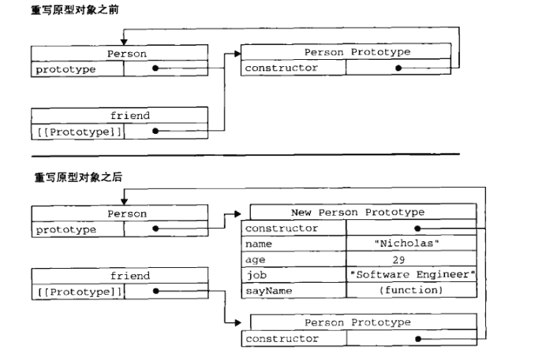

本文主要介绍JavaScript面向对象的设计，包括对象的创建、继承，其中主要分析了构造函数与原型的优缺点及组合方式，然后是函数表达式，包括递归、闭包等内容。
面向对象的程序设计
在这一里，主要对几个重要的技术进行说明，并不想对这一章进行整体的展开。这几个重要概念是：对象、构造函数（类）、原型、基于原型及构造函数的继承。
对象
定义
- 定义：无序属性的集合，其属性可以包含基本值、对象或者函数。
- 可以把es对象想象成散列表：无非就是一组名值对，其中值可以是数据与函数。
对与这个，首先我们在C++/Java里的对象，就是将他们的函数名当作的键。
其次也符合对python中的字典类型的认识，即可以当作struct来使用。属性类型
es5中有两种属性：数据属性和访问器属性.这些属性是只在内部才可用的特性。数据属性
| 属性 | 说明 |
|---|---|
| Configurable | 表示能否通过delete删除属性从而重新定义属性 |
| Enumerable | 表示能否通过for-in循环返回属性 |
| Writable | 表示能否修改属性的值 |
| value | 包含这个属性的数据值 |
示例：
1 | var person = {} |
这种类似于const
访问器属性
| 属性 | 说明 |
|---|---|
| Configurable | 同上 |
| Enumerable | 同上 |
| Get | 在读取属性时调用的函数 |
| Set | 在写入属性时调用的函数 |
示例：
1 | var book = { |
创建对象
工厂模式
示例
1 | fuction createPerson(name, age, job){ |
说明
工厂模式解决了创建多个相似对象的问题，但却没有解决对象识别的问题（即知道一个对象的类型）
构造函数（类）
实例
1 | function Person(name, age, job){ |
说明
- 这种构造函数的方法跟类是一致的
- person1和person2分别保存着Person的一个不同的实例，这两个对象都有一个constructor（构造函数）属性，该属性指向Person
1 | alert(person1.constructor == Person) //true |
- 对象的constructor属性最初是用来标识对象类型的。但是，检测对象类型，还是用instanceof操作符更可靠一些。
1 | alert(person1 instance of Person) // true |
问题
- 构造函数的主要问题，就是每个方法都要在每个实例上重新创建一遍。如person1和person2都有一个sayName()的方法，但那个方法不是同一个Function实例。
原型
实例
1 | function Person(){ |
说明
原型对象
原型对象类似于静态变量，类唯一。
上图很好的说明了实例、构造函数、原型之间的关系。
函数与原型之间的关系：每个新函数都有一个prototype属性，这个属性指向原型对象。默认情况下，所有原型对象会也有一个constructor属性，这个属性指向所原型所在的函数。
实例与原型
新实例的内部包含一个指针，指向构造函数的原型对象。
1 | alert(Object.getPrototypeOf(person1) == Person.prototype); // true |
hasOwnProperty()可以检测一个属性是存在于实例，还是存在于原型中。只在属性存在于对象实例中，才会返回true
in:in操作符可以单独使用，在操作符会在通过对象能够访问给定属性时，返回true，无论是在实例还是在原型中。
若实例中添加一个属性，与原型中的属性同名，则该属性屏蔽原型中的属性.[这里就有一种类似于作用域东西，先搜索实例，没有找到就搜索原型]
这个新属性只会阻止访问原型中的属性，并不会修改那个属性，即使设置位null，也只会在实例中设置这个属性，而不会恢复其指向原型的连接。但delete操作符，则可以完全删除实例属性，从而恢复原型属性.
1 | person1.name = "feng" |
更简单的原型语法
前面每添加一个属性，都要敲一遍Person.prototype，更常见的做法是用一个对象字面量来重写整个原型对象。
1 | function Person(){ |
这样存在一个问题，原来prototype中的constructor指向Person构造函数，但重新赋值后,constructor属性不再指向Person了。可以通过制定constructor: Person来指定。但这样指定的，也可通过in来访问到，最好的方式是：
1 | Object.defineProperty(Person.prototype, "constructor", { |
原型动态修改
1 | function Person(){ |
这是因为friend所中的原型指针指向的是赋值之前的原型，而不是之后的。

原型对象的问题
原型中所有的属性是被所有实例共享的，是静态的，所以修改一个，全部都会修改。故适合函数的复用。
原型与构造函数的组合使用
实例1
即普通属性放到构造函数中，将函数放到原型中。
1 | function Person(name, age, job){ |
实例2
1 | function Person(name, age, job){ |
继承
原型链继承
实例
1 | function SuperType(){ |
说明
这种方法起始就是在设置子类的原型时指向父类的一个实例，这与用字面量来定义原型类似。他们之间的关系如下：
存在问题
1 | funtion SuperType(){ |
说明
通过使用call（）方法，就是在新创建SubType实例时，调用了SuperType构造函数，这样就会在SubType对象上初始化了所有SuperType（）函数的属性。
问题
问题依旧明确，函数没有办法复用。
组合
实例
1 | function SuperType(name){ |
说明
属性通过构造函数来继承，避免了由于原型链继承带来的静态问题。
函数通过原型链继承，避免了构造函数继承带来的函数复用问题。
而且通过instanceof合isPrototypeOf()也能识别基于组合继承的对象。
函数表达式
递归
普通递归
1 | function factorial(num){ |
问题
1 | var another = factorial; |
修改
函数内的arguments有一个 callee属性，指向正在之行函数的指针。
1 | function factorial(num){ |
闭包
作用域链
当某个函数第一次调用时，会创建一个执行环境（execution context）及相应的作用域链，并把作用域链赋值给execution context一个内部特殊属性（[Scope]）。然后，使用this, arguments和其它命名参数的值来初始化函数的活动对象(activity object)。
1 | funtion compare(v1, v2){ |

闭包是一个函数内部创建另一个函数，内部函数引用外部函数的变量。
这样内部函数的作用域链中，就含有外部函数的作用域（活动对象）
闭包与变量
1 | function createFuntions(){ |
内层函数直接访问外层函数的变量，而这个变量最后都变成了10,故所有的函数都返回10
1 | function createFuntions(){ |
关于this
this对象是在运行时，基于函数的执行环境绑定的.当函数作为某个对象的方法调用时，this等于那个对象。不过匿名函数的执行环境具有全局性。
私有变量
私有变量起始跟类的私有成员类似。
1 | function MyObject(){ |
构造函数内部定义的的私有变量和函数不能在外部访问，但可以通过公有的函数进行访问。
可以认为有this的为公有，没有的就是私有。